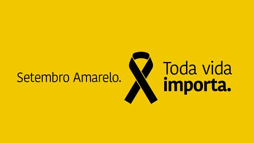

Setembro Amarelo no Brasil

Aproveitando a data mundial, a campanha Setembro Amarelo foi criada no Brasil em 2015. O projeto é um trabalho conjunto do CVV (Centro de Valorização da Vida), CFM (Conselho Federal de Medicina) e ABP (Associação Brasileira de Psiquiatria)
Leia mais!
Fatores que podem aumentar o risco de ideias suicidas

A tentativa de suicídio pode acontecer entre pessoas de qualquer faixa etária, gênero ou classe social. Porém, alguns fatores podem ampliar o risco.
Leia mais!